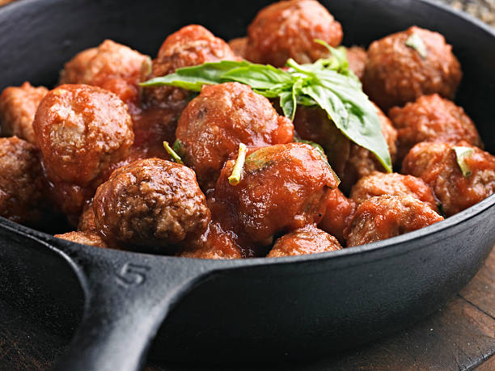

The Meatiest MeatBALLS you will ever bite into!

Description
These meatballs are so meaty you'll go vegan after one bite. There is nothing else to this recipe besides the meat.
Ingredients
- 1/4 pound ground beef
- 1/4 pound ground chicken
- 1/4 pound ground lamb
- 1/4 pound ground ham
- 1/4 pound ground turkey
Steps
- First, combine all the meats
- Next, shape meat into balls
- Lastly, cook them on a pan on the stove or cook them half on the stove then do the other half in the sauce.